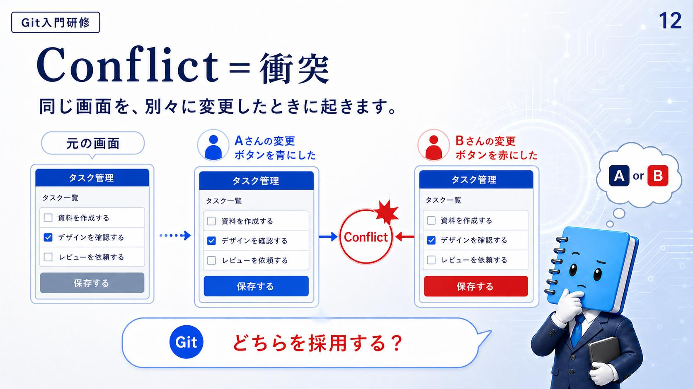
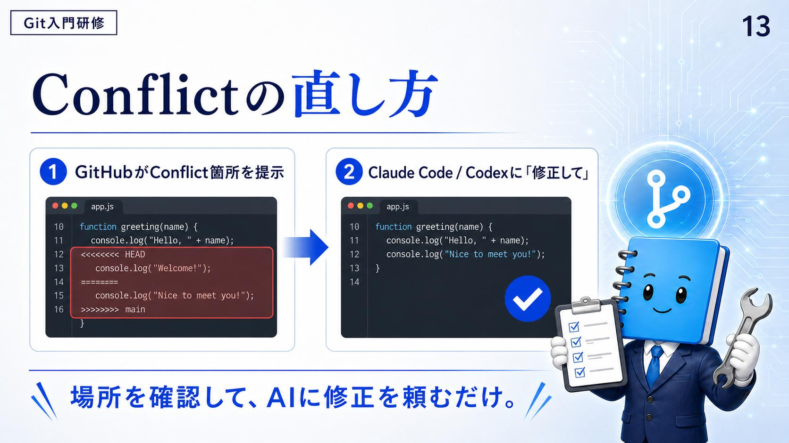

Conflict ＝ 衝突
資料の定義は短い。同じ画面を、別々に変更したときに起きます。
スライドはタスク管理の画面を例にしている。元の画面には「保存する」ボタンがあり、そこから2人が別々に手を入れた。
2つの変更は、どちらも正しく作られている。ただし対象が同じ1か所なので、機械には決められない。スライドで Git が発しているのは「どちらを採用する？」という問いで、答えは A か B のどちらか——つまり人が選ぶ。
03 の A さんと B さんは、ログイン機能とデザインという別々のところを触っていたので、そのまま統合できた。同じ画面の同じ部分を2人が変えたときにだけ、この問いが立つ。

確認
資料の例で Git が自分では決められなくなったのは、2人の変更にどんな関係があったからか。
- 片方の変更にだけ誤りが含まれていた
- 2人が同時刻に変更を送ってしまった
- 2人が同じ画面の同じ部分を、別々に変えていた
答え: C — どちらの変更も正しく作られているが、対象が同じ1か所だった。
だから機械は選べず、「どちらを採用する？」という問いが人に返ってくる。
Conflict の直し方
資料は直し方を2手順に畳んでいる。
GitHub が Conflict 箇所を提示
衝突した場所がファイルの中に印として現れる。
Claude Code / Codex に「修正して」
その場所を AI に直してもらう。
①のスライドには、実際に印の入った app.js が写っている。<<<<<<< HEAD と >>>>>>> main で挟まれた範囲が衝突箇所で、======= がその中の区切りにあたる。
function greeting(name) {
console.log("Hello, " + name);
<<<<<<< HEAD
console.log("Welcome!");
=======
console.log("Nice to meet you!");
>>>>>>> main
}
②では、その印が消えて片方だけが残った状態になっている。
function greeting(name) {
console.log("Hello, " + name);
console.log("Nice to meet you!");
}
スライドの結びは「場所を確認して、AI に修正を頼むだけ。」——衝突を人力で読み解く作業ではなく、場所の特定は GitHub、修正は AI という分担として説明されている。

ここで名前が挙がっている Claude Code については、Claude Code 入門コースに11レッスンぶんの解説がある。11 レビューして出荷するでは、コミットからプルリクエスト作成までを一手で済ませる操作も扱っている。
確認
資料が示す直し方で、衝突した場所を教えてくれるのは何か。
- GitHub。ファイルの中に衝突箇所が印として現れる
- チームのレビュアーが目視で探して知らせる
- ローカルのパソコンが自動で片方を選んで消す
答え: A — 場所の提示は GitHub 側の仕事で、修正を頼む相手が AI。
資料はこの2手順を「場所を確認して、AI に修正を頼むだけ」とまとめている。
まとめ
Conflict は同じ画面を別々に変更したときに起きる。決めるのは機械ではなく人。
衝突は失敗ではなく、同時に進めたことの当然の帰結として起きる。次の回は、ここまでの用語をすべて順番に並べた実際の開発フローを見る。この流れを守っていれば、衝突が起きても本線は壊れない。